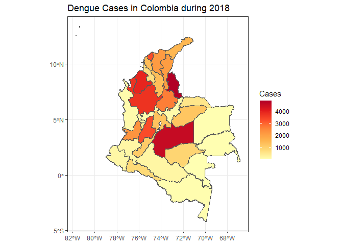

ColOpenData is a package that acquires, standardizes, and wrangles Colombian socioeconomic, climate and land cover data. It solves the problem of Colombian data being issued in different web pages and formats by using functions that allow the user to select the desired database and download it without having to do the exhausting acquisition process. Also, it allows these datasets to be merged so multiple operations, such as calculating statistics, can be made, taking into account information from different datasets.
ColOpenData is developed at Universidad de Los Andes as part of the Epiverse-TRACE program.
Installation
You can install the development version of ColOpenData from GitHub with:
# install.packages("pak")
pak::pak("epiverse-trace/ColOpenData")Quick start
This example shows how to retrieve census data at a department level in Colombia including the administrative divisions and spatial data, to later use it to visualize Dengue cases in the country during 2018.
We will be using the MGNCNPV_DPTO_2018 dataset, which contains the National Geo statistical Framework (MGN) and the National Population and Living Census (CNPV) at department level for 2018.
To load the dataset we can use the download function as follows.
census <- download("MGNCNPV_DPTO_2018")
str(census)
#> Classes 'sf' and 'data.frame': 33 obs. of 89 variables:
#> $ DPTO_CCDGO: chr "18" "19" "86" "76" ...
#> $ DPTO_CNMBR: chr "CAQUETÁ" "CAUCA" "PUTUMAYO" "VALLE DEL CAUCA" ...
#> $ VERSION : num 2018 2018 2018 2018 2018 ...
#> $ AREA : num 9.01e+10 3.12e+10 2.60e+10 2.07e+10 7.13e+10 ...
#> $ LATITUD : num 0.799 2.397 0.452 3.859 2.728 ...
#> $ LONGITUD : num -74 -76.8 -75.9 -76.5 -68.8 ...
#> $ STCTNENCUE: num 163381 622959 147797 1674673 13059 ...
#> $ STP3_1_SI : num 1117 83033 4704 18250 3675 ...
#> $ STP3_2_NO : num 162264 539926 143093 1656423 9384 ...
#> $ STP3A_RI : num 1117 70827 4659 3618 3675 ...
#> $ STP3B_TCN : num 0 12206 45 14632 0 ...
#> $ STP4_1_SI : num 544 226 1389 21431 532 ...
#> $ STP4_2_NO : num 162837 622733 146408 1653242 12527 ...
#> $ STP9_1_USO: num 132937 446806 107456 1410067 11111 ...
#> $ STP9_2_USO: num 5429 10837 3397 39096 293 ...
#> $ STP9_3_USO: num 24804 165011 36789 224820 1553 ...
#> $ STP9_4_USO: num 211 324 173 690 102 101 204 29 131 103 ...
#> $ STP9_2_1_M: num 96 328 67 1920 12 12 248 12 0 39 ...
#> $ STP9_2_2_M: num 3860 6147 2572 22705 154 ...
#> $ STP9_2_3_M: num 1117 2276 717 11986 106 ...
#> $ STP9_2_4_M: num 243 2016 29 2357 6 ...
#> $ STP9_2_9_M: num 113 70 12 128 15 14 8 36 14 47 ...
#> $ STP9_3_1_N: num 160 810 188 5572 15 ...
#> $ STP9_3_2_N: num 5422 10334 4402 50097 244 ...
#> $ STP9_3_3_N: num 2511 9455 2485 40191 263 ...
#> $ STP9_3_4_N: num 3052 43342 6665 32665 24 ...
#> $ STP9_3_5_N: num 1250 3515 1428 5452 149 ...
#> $ STP9_3_6_N: num 10099 86486 18445 67080 597 ...
#> $ STP9_3_7_N: num 678 3155 368 6881 35 ...
#> $ STP9_3_8_N: num 12 105 74 169 7 3 52 9 0 2 ...
#> $ STP9_3_9_N: num 96 969 319 1340 5 6 227 3 2 4 ...
#> $ STP9_3_10 : num 1453 6596 2334 14970 206 ...
#> $ STP9_3_99 : num 71 244 81 403 8 6 45 22 1 16 ...
#> $ STVIVIENDA: num 138366 457643 110853 1449163 11404 ...
#> $ STP14_1_TI: num 115307 372096 90540 902928 8577 ...
#> $ STP14_2_TI: num 18322 33837 11052 490230 690 ...
#> $ STP14_3_TI: num 3591 18177 8098 52855 311 ...
#> $ STP14_4_TI: num 493 30035 684 1173 1697 ...
#> $ STP14_5_TI: num 35 2187 49 518 34 ...
#> $ STP14_6_TI: num 618 1311 430 1459 95 ...
#> $ STP15_1_OC: num 110525 367793 91508 1231570 9364 ...
#> $ STP15_2_OC: num 4306 24327 3418 64873 72 ...
#> $ STP15_3_OC: num 7299 32268 5761 41444 660 ...
#> $ STP15_4_OC: num 16236 33255 10166 111276 1308 ...
#> $ TSP16_HOG : num 116166 432493 107053 1267039 9953 ...
#> $ STP19_EC_1: num 93242 336910 70944 1216379 5822 ...
#> $ STP19_ES_2: num 17283 30883 20564 15191 3542 ...
#> $ STP19_EE_1: num 70029 228576 58033 321720 3421 ...
#> $ STP19_EE_2: num 16659 51555 9096 438056 1401 ...
#> $ STP19_EE_3: num 3868 22577 1002 295053 144 ...
#> $ STP19_EE_4: num 523 10705 46 84368 5 ...
#> $ STP19_EE_5: num 20 2682 15 54589 3 ...
#> $ STP19_EE_6: num 7 564 37 16599 1 ...
#> $ STP19_EE_9: num 2136 20251 2715 5994 847 ...
#> $ STP19_ACU1: num 80362 239233 47315 1174360 2047 ...
#> $ STP19_ACU2: num 30163 128560 44193 57210 7317 ...
#> $ STP19_ALC1: num 72630 163290 49898 1119657 2621 ...
#> $ STP19_ALC2: num 37895 204503 41610 111913 6743 ...
#> $ STP19_GAS1: num 40608 101100 13261 1003741 0 ...
#> $ STP19_GAS2: num 67966 264114 77496 218169 9364 ...
#> $ STP19_GAS9: num 1951 2579 751 9660 0 ...
#> $ STP19_REC1: num 80237 163693 54930 1156676 3615 ...
#> $ STP19_REC2: num 30288 204100 36578 74894 5749 ...
#> $ STP19_INT1: num 16740 57774 9947 683961 693 ...
#> $ STP19_INT2: num 91374 307230 80704 537450 8442 ...
#> $ STP19_INT9: num 2411 2789 857 10159 229 ...
#> $ STP27_PERS: num 359602 1243503 283197 3789874 44431 ...
#> $ STPERSON_L: num 11260 7969 5720 27645 6849 ...
#> $ STPERSON_S: num 348342 1235534 277477 3762229 37582 ...
#> $ STP32_1_SE: num 182378 615833 142900 1800614 23214 ...
#> $ STP32_2_SE: num 177224 627670 140297 1989260 21217 ...
#> $ STP34_1_ED: num 63844 198781 47232 460691 11162 ...
#> $ STP34_2_ED: num 78433 224899 60789 571709 12028 ...
#> $ STP34_3_ED: num 62230 218267 51033 632594 7334 ...
#> $ STP34_4_ED: num 50014 184644 42216 556818 5070 ...
#> $ STP34_5_ED: num 39637 141446 32710 489478 3781 ...
#> $ STP34_6_ED: num 31396 119102 23515 468483 2749 ...
#> $ STP34_7_ED: num 19015 81959 14118 325926 1327 ...
#> $ STP34_8_ED: num 10148 48453 7828 183070 739 ...
#> $ STP34_9_ED: num 4885 25952 3756 101105 241 ...
#> $ STP51_PRIM: num 113225 434283 85979 851033 18602 ...
#> $ STP51_SECU: num 24649 195877 30892 446077 2788 ...
#> $ STP51_SUPE: num 17680 105690 20987 636722 2227 ...
#> $ STP51_POST: num 904 7288 501 44248 28 ...
#> $ STP51_13_E: num 17844 56673 11058 111703 2545 ...
#> $ STP51_99_E: num 10238 17057 5630 49860 1886 ...
#> $ Shape_Leng: num 21.4 14 12.7 12.7 21.2 ...
#> $ Shape_Area: num 7.32 2.53 2.11 1.68 5.75 ...
#> $ geometry :sfc_MULTIPOLYGON of length 33; first list element: List of 1
#> ..$ :List of 1
#> .. ..$ : num [1:33205, 1:2] -74.9 -74.9 -74.9 -74.9 -74.9 ...
#> ..- attr(*, "class")= chr [1:3] "XY" "MULTIPOLYGON" "sfg"
#> - attr(*, "sf_column")= chr "geometry"
#> - attr(*, "agr")= Factor w/ 3 levels "constant","aggregate",..: NA NA NA NA NA NA NA NA NA NA ...
#> ..- attr(*, "names")= chr [1:88] "DPTO_CCDGO" "DPTO_CNMBR" "VERSION" "AREA" ...Once downloaded, we can subset the data by regions or columns of interest. In this example we only need the departments codes and geometries.
Dengue cases during 2018 can be loaded from the example dataset dengue_2018, which was previously loaded in the package.
dengue_cases <- dengue_2018
str(dengue_cases)
#> tibble [34 × 2] (S3: tbl_df/tbl/data.frame)
#> $ DPTO_CCDGO: chr [1:34] "00" "01" "05" "08" ...
#> $ CASES : int [1:34] 4 407 3737 3298 1395 96 47 191 177 2103 ...To merge the datasets we will use the department’s codes.
dengue_col <- merge(
x = col,
y = dengue_2018,
by = "DPTO_CCDGO"
)Finally, we can visualize the cases in a map.
library(ggplot2)
library(RColorBrewer)
ggplot(data = dengue_col) +
geom_sf(mapping = aes(fill = CASES)) +
scale_fill_gradientn(
colours = brewer.pal(7, "YlOrRd"),
name = "Cases"
) +
ggtitle("Dengue Cases in Colombia during 2018") +
theme_bw()
Lifecycle
This package is currently a concept, as defined by the RECON software lifecycle. This means that essential features and mechanisms are still being developed, and the package is not ready for use outside of the development team.
Contributions
Contributions are welcome via pull requests.
Code of Conduct
Please note that the ColOpenData project is released with a Contributor Code of Conduct. By contributing to this project, you agree to abide by its terms.